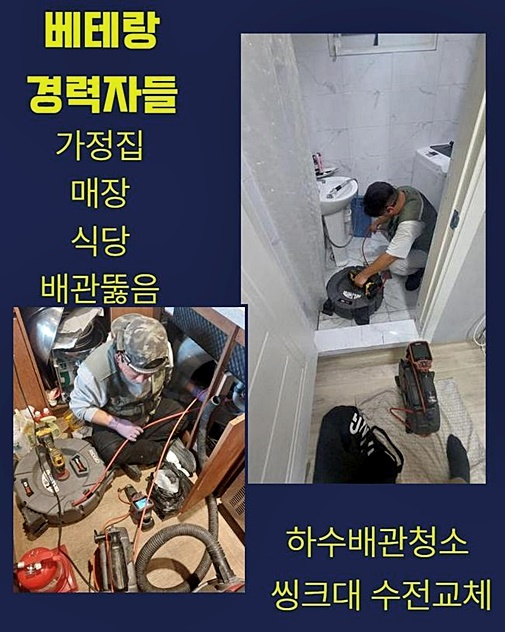
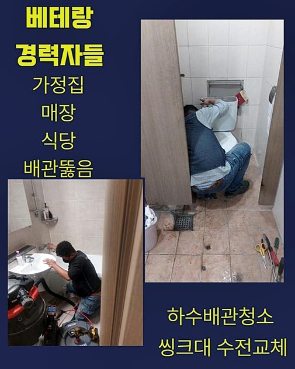
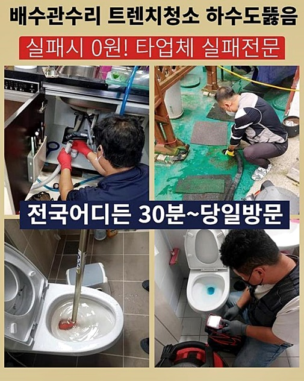
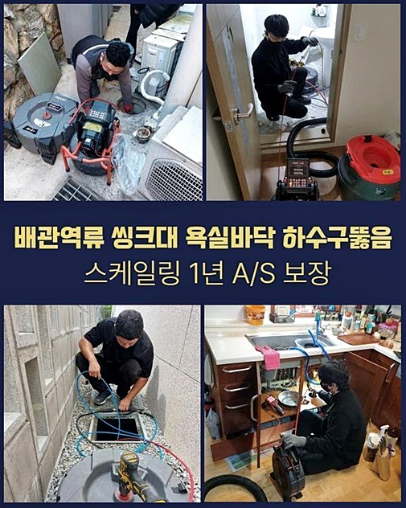
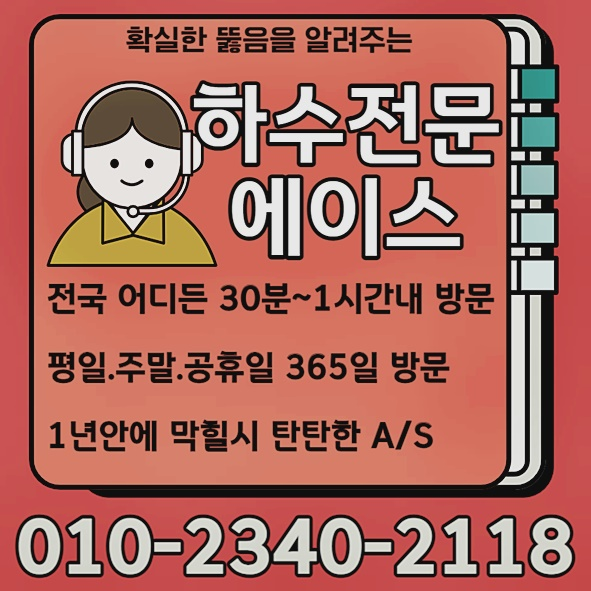

🏠 안양 안양동하수도뚫음 고압세척비용 설비업체
안양 하수구막힘 전문 시공 후기

📋 작업 개요
- 위치: 안양
- 서비스 유형: 하수구막힘, 배관막힘, 누수수리, 역류해결, 뚫는업체, 배관청소, 고압세척
- 작업 일시: 2024. 7. 22. 10:27
- 업체명: 하수구수사대 (010-5615-2118)
🔍 문제 상황
안양 안양동하수도뚫음 고압세척비용 설비업체
간소한 물빠짐 결함이 아닐지라도 배수구를 오차없이 점검해주어야 할 필요들이 있겠습니다
직접적인 증상들이 안보여도 쌓인 잔여물질은 점점 뭉쳐서 만성적인 2차피해로 불거져요
주상복합 등에 거주하는 경우라면 막혀버려서 예기치않게 이웃에게도 불편을 미칠 가능성이 농후하여 해당 시점에서 전조가 보인다면 빨리 까닭을 파악해봐야합니다
일반적으로 배수장애는 심화되면 역류증세가 발생한다거나 누수증세가 야기될 가능성이 많았기에 대응을 서두른다면 피해들을 피할 수 있어요
이러한 까닭에 배관 관련 지식이 뛰어난 입장으로 생각해 볼때에 빠르게 대처하는것을 반복하여 안내하는 내막도 이런 상황 때문인거죠
상당인원들이 위치한 건물의 경우 가지배관들이 연결된채로 있어서 다양한 구간으로 물들이 운반되죠
말씀드릴 사례의 경우 거주지와 상업시설이 혼재한 건축물서 발생되었어요
이러한 구조일땐 배수관로들이 다양할 확률이 많습니다
달려갔던 곳에서는 대개 모습이였습니다
위와같은 건축물서도 가정에서 배수오류가 야기되었다 일러주셔서 그곳으로 발걸음을 옮겼죠
당도하여 구조를 파악해보니 안심할 수 있었던 점은 밑의집엔 문제가 보이지 않았고 아래는 화장실쪽으로 즉각 진단에 착수했습니다

🔎 원인 분석
💡 전문가 진단: 정밀 진단 장비를 사용하여 슬러지의 고착 여부를 판명하고 타격/세척 작업을 실시했습니다.
천정부에 존재하는 점검입구를 여니 다양한 관로 중에서 사이즈가 있는 관로의 모습들이 드러났어요
살피고 안 것은 하수관에 구멍낸 흔적들이 보였어요
오래도록 지속적으로 막히는바람에 점검을 실시하지않았나 판단되었습니다
구조문제로 막히는 문제들이 야기되거나 왜 막히는지에 대해서 파악되질 않아서 꾸준히 증상이 불거지게되기 마련입니다
위와같은 사안을 파악한다음 위쪽의 가정으로 자리를 옮겨 우선적으로 배수관의 모습들을 살필 생각이였는데요
관찰결과 지금은 막히게되어서 내시경기가 이용될 수 없던 상황이였습니다
이럴땐 석션기기로 잔해물을 흡입한 뒤 내시경장치를 삽입하는데요
석션장비를 배수구부에 밀착시킨뒤 강하게 작업했는데 기대완달리 상당수가 오수들이였고 조금의 부유물만 배출되었어요
증상을 파악하기위해선 내시경기기를 투입시켜 내부를 살펴야하겠습니다
어디서 막혀버린건지 왜 역류하는 문제가 나타나게된건지 염두에두며 확인하니 현재 장소보단 아래의 천정부에서 시공작업을 실시해 문제를 해결해가는게 옳다고 판단했습니다
관찰을하고서 이처럼 뚫는 지점을 조정하면서 수리를 이어갑니다 필요하다느끼면 내부서 막혔어도 밖의 하수관로에서 점검을 하기도 해요
문제들을 시정해내는 최상의 위치를 특정해내는 과정도 전문업체의 실력이라 볼 수 있겠습니다
곧바로 아랫층의로 위치를 이동시키고 막힌 배수관을 뚫어내기위한 준비를 마쳤어요

🔧 작업 과정
배수구를 뚫어내기 위하여 이용한 장치는 샤프트도구라는 기기인데요
일반적으로 장소에서 대부분 쓰고있는 장치로 부유물들을 분쇄시켜 세척도 수행합니다
샤프트기기를 넣어서 고착물들을 타격했습니다
오늘의경우 일반적인 사안관 달리 배수관의 사이즈도 컸고 잔해도 적지않아 샤프트장치만 이용해서는 역부족이라는걸 파악했는데요
그리하여 해결을 목적으로 고압분사방법의 작업이 실시되야겠다는 생각이 들었습니다
쎈 수압들로 이물들을 없애줘야 제대로 된 해결을 도출할 수 있었죠
내부의 상황이 안보일만큼 중구난방으로 뻗어있는 상태였어요
예상으로는 타 전문진은 석션을 통한 흡입과 샤프트제거를 목적으로한 과정만 이행하고 작업들을 끝내준것으로 보여졌습니다
이런 이유로 잠깐은 쓸 수 있었겠으나 물막힘이 반복하여 반복되고 좀처럼 하수라인이 기능을 제대로 하기가 힘들정도였습니다
저희업체가 고객님의 의뢰를 맡았으니 완벽히 증상들을 해결하려고 했어요
샤프트장비말고 쎈 크란즐기기를 준비해서 연결까지 시켜주었는데요
사실 고압분사방법의 작업이 청소를 이어나갈때 강한 수압들로 청소들을 수행시키기에 안전준수를 철저히해야해요
문제들에 요구되는 작업방법 실시를 이어가지 않을 시 문제를 없애는것이 이뤄지지를 못해 재차 안타깝게도 재발로 이어질 가능성이 높습니다
그러므로 고객님도 며칠을 간격으로 배수장애를 일으키는 악순환을 그만하고싶어 저희전문진에게 문제를 맡기신건데요
청소시에는 그저 문제 위치만 뚫어내는게 아니고 근원적인 부분을 빈틈없이 타격하여 통수 길이 넓어지게끔 깨끗히 점검을 할 예정이에요
이전작업을 할 때 타공흔적 위치에 크란즐장비를 투입해주고 내부 세척을 이행했습니다
당연히 주거지라면 관로의 지름이 좁기에 크란즐 작업이 수월하지만은 않았는데요 그렇지만 지속적으로 심혈을 기울이며 크란즐 작업을 이행했습니다
물리력이 상당한 청수가 발사되며 배수구를 복귀해냈고 전구간에 걸쳐 빈틈없이 뚫어냈어요
고압 청소를 하여 오수들이 빠졌는데 어떠한 요소들이 없는채로 깨끗히 작업이 끝나게되었죠
최종적으로 통수진행 상황 파악을 거친 뒤 하수구막힘 시공들을 정리해주었습니다


✅ 작업 완료
대개 세대에서는 고압세척수리를 수행해주는 경우들은 흔치않아요 하지만 문제양상을 보고 실시가 필요하다는 결론을 내리고 말끔하게 청소했어요
간헐적으로라도 문제가 생길만큼의 기름때가 고착화까지 진행되었기에 점검을 마치고 나니 저희까지 기분이 좋았는데요
시설별 구조적상황과 이런저런 요소가 다르기에 장비라던지 절차까지 적합하게 준비를 해야합니다
저희의경우 여태까지 해결했던 노하우들을 기반으로 제대로된 작업으로 배수관을 뚫는데요
의뢰자의 비용과시간이 낭비되는 일 없게 저희가 발 벗고 나설게요!



⚠️ 베란다 누수 및 방수 관리 방법
- ✅ 비가 많이 올 때 창틀 주변이나 아래층 천장에 얼룩이 생기는지 정기적으로 확인해 보세요.
- ✅ 우수관 주변 실리콘 마감이 들뜨거나 깨진 틈새가 있는지 손상 여부를 수시로 체크하세요.
- ✅ 베란다 바닥 타일의 줄눈(메지)이 소실되면 그 틈으로 물이 침투하여 누수가 유발됩니다.
- ✅ 누수 의심 증상 발견 시 방치하면 아래층 손실이 커지므로 즉시 전문가의 진단을 받으십시오.
💡 핵심 정리
- 확실한 장비 작업(내시경 점검 및 샤프트 스케일링)으로 원인을 뿌리 뽑습니다.
- 작업 후 1년 이내에 동일한 부위 재발 시 100% 무상 A/S 서비스를 보장합니다.
- 서울 · 경기 · 인천 전 지역에 24시간 언제든 긴급 출동할 수 있도록 항시 대기 중입니다.
❓ 자주 묻는 질문 (FAQ)
🚨 안양 하수구막힘 문제로 고민이신가요?
정확한 원인 진단과 확실한 시공으로 재발 없는 해결을 약속드립니다.
24시간 긴급 출동 | 서울 · 경기 · 인천 전지역 | 1년 내 재발 시 무상 A/S